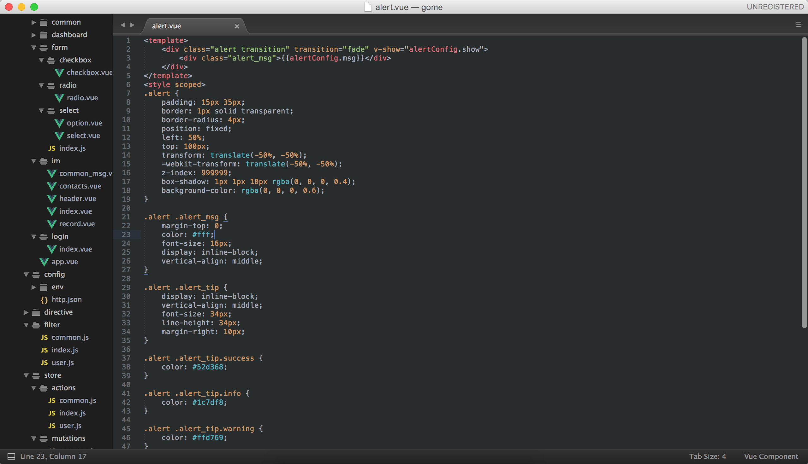
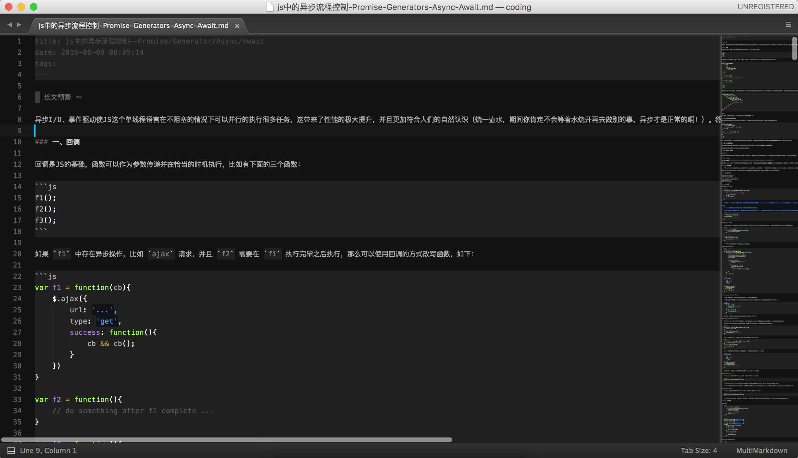

我的sublime配置
2016年6月23日
功能插件
Emmet
写
html的利器，不用多说Babel
不仅能够识别更多的js方言，让sublime有正确的着色，而且能够支持ES6的语法提示等
HTML-CSS-JS Prettify
支持
htmlcssjs文件的格式化，快捷键command + shift + HMarkdown Preview
markdown 预览
MarkdownEditing
markdown 高亮
主题插件
Colorsublime
非常多非常多的配色，使用方法，安装完成后，
ctl+shift+p(Windows/Linux) 或者⇧+⌘+p(OSX)，选择Colorsublime: Install Theme移动光标选择配色
Theme - Soda
配色相当友好的主题，我的配置是
"theme": "Soda Dark 3.sublime-theme"One Dark Color Scheme
仿 Atom 的语法着色，完成度百分百
放几张图
代码
Markdown

想开箱即用？打开 Preferences -> Browse Packages，备份 Packahes 文件下的内容，在此文件夹打开命令行，执行 git clone https://github.com/luoye-fe/sublimeTextConfig.git ./，完成后打开 sublime 等待各种插件安装完成即可。